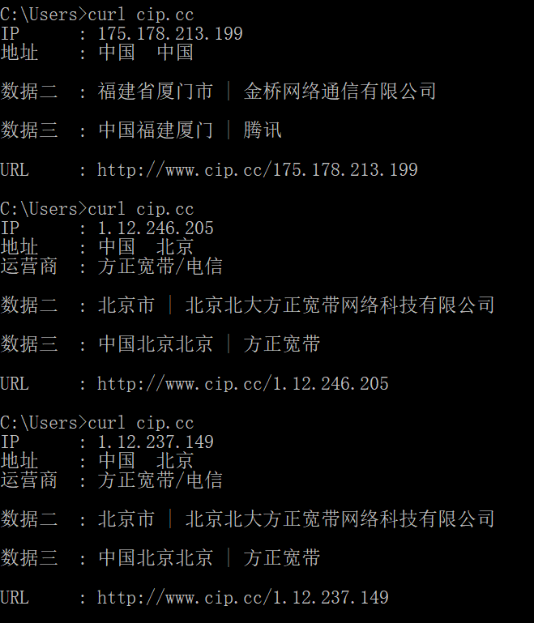

使用腾讯云函数(SCF)搭建免费代理池
以前曾经用过proxy_pool搭过代理池，但是大部分爬来的代理都不怎么好用就果断放弃了
最近看使用一篇文章感觉挺靠谱的，也临近HVV，就自己搭着试了试，效果也不错
https://blog.csdn.net/qq_45244158/article/details/122945753
背景
云函数
云函数（Serverless Cloud Function，SCF）是云计算厂商为企业和开发者们提供的无服务器执行环境，可在无需购买和管理服务器的情况下运行代码， 是实时文件处理和数据处理等场景下理想的计算平台。只需使用 SCF 平台支持的语言编写核心代码并设置代码运行的条件，即可在某云基础设施上弹性、安全地运行代码。
无服务器（Serverless）不是表示没有服务器，而表示在使用 Serverless 时，我们无需关心底层资源，也无需登录服务器和优化服务器，只需关注最核心的代码片段，即可跳过复杂的、繁琐的基本工作。使用云函数（SCF）时，我们只需使用平台支持的语言（Python、Node.js、PHP、Golang、Java 及 Custom Runtime）编写代码，云计算厂商将完全管理底层计算资源，包括服务器 CPU、内存、网络和其他配置/资源维护、代码部署、弹性伸缩、负载均衡、安全升级、资源运行情况监控等。总结云函数的三个特性就是：
- 多出口
- 调用时创建执行
- 无需服务器承载
代理池的构建原理
云函数（SCF）可通过 API 网关触发器进行触发，接受来自客户端的数据，并将请求转发出去。也就是说利用云厂商提供的云函数（函数计算）功能，将客户端的HTTP请求转发，由于云函数拥有非常多的出口IP，也就不怕封IP了

搭建socks5代理池
项目地址https://github.com/culprits/SCFProxy
云函数函数配置
登录 腾讯云函数服务，新建云函数

选择在线编辑，粘贴代码\SOCKS5\src\server.py的内容
1 | |
点击完成，在函数管理-函数配置中将执行超时时间改为最大900，即一个SOCKS5长连接最多维持15min

创建触发器，触发方式为API网关触发

复制访问路径备用

VPS服务端配置
注：其实可以不使用vps服务端，直接调用云函数实现代理，但是我正好有vps而且这样还挺方便就没有研究这个方向，没有vps的伙伴可以研究一下
需要环境：要求 Python >= 3.8
我的vps正好是CentOS 7 默认的python版本是python2.7.5，就顺带装了一下python3.8.1
1 | |
将socks_client文件夹，包含requirements.txt，上传到vps上

执行如下命令：
1 | |
打开上面两个端口的防火墙，包括vps防火墙以及vps服务商的防火墙设置
客户端配置
下载Proxifier代理软件，内网渗透、流量代理良品
我使用的是https://www.litiaotiao.com/proxifier.html，推荐正版，小心病毒
在配置文件-代理服务器，填写vps地址、端口、协议Socks5、用户名及密码

结果
总结
等vps过期不续费了，研究一下无vps代理，目前为至这个还很好用，谢谢大佬
另外，腾讯云函数要开始收费了，是不是要改战华为云函数工作流，函数前100万次/月调用免费
本博客所有文章除特别声明外，均采用 CC BY-SA 4.0 协议 ，转载请注明出处！